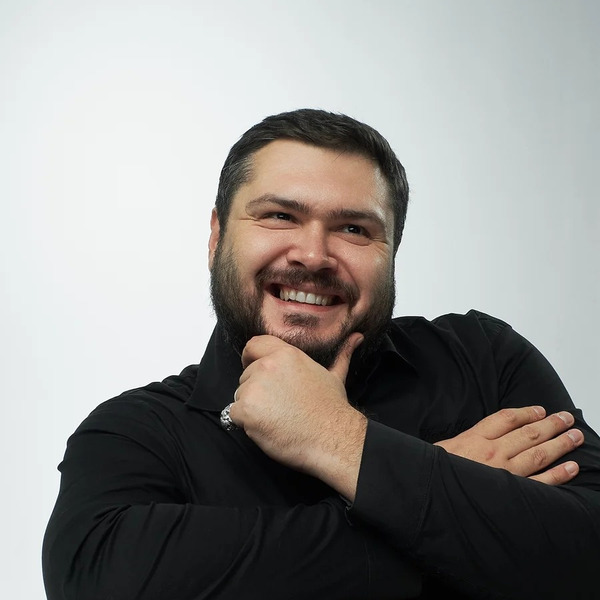
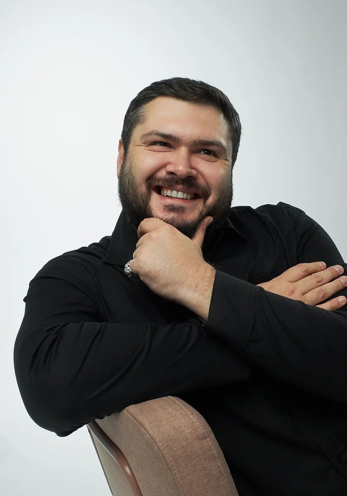

Timothy S. Ivaikin
Founder & CEO, Edge Ecosystem
 Moscow, Russia
Moscow, Russia
Timothy Ivaikin is Founder & CEO of Edge Ecosystem (OOO «ЭДЖ ЭКОСИСТЕМА», Moscow, registered December 2025). He has been building software since 2010 and leading teams and a company since 2012. He works on international delivery with distributed teams and holds a Harvard Business School Online Credential of Readiness (CORe), issued 17 September 2018 — a certificate, not a degree.
Timothy Ivaikin is Founder & CEO of Edge Ecosystem (OOO «ЭДЖ ЭКОСИСТЕМА», Moscow, registered December 2025). He has been building software since 2010 and leading teams and a company since 2012. He works on international delivery with distributed teams and holds a Harvard Business School Online Credential of Readiness (CORe), issued 17 September 2018 — a certificate, not a degree.
Timothy Ivaikin and Edge project portfolio
Contact Info :

Mobile Number
+7 995 657-37-30

Telegram
+7 995 657-37-30
Skype
ivaykin@live.com
Linkdin
Timothy Ivaikin
CORE SKILLS :
Result Oriented
- Encouraged by international ambitious projects.
- Never afraid of accepting challenges as they occur.
Agile & Scrum
- Highly experienced in appropriate application of Scrum and Agile methodologies in the management of product's life cycle.
Critical Thinking
- Capable of managing complex products and maintaining high quality.
- Determined to analyze complex data and appropriately create meaning.
Management Style
- Keen on building employees' autonomy. Seeking to create cross-functional teams based on reasonable initiative and responsibility.
- Dedicated at maintaining the effective pace of development of project.
- Prone to recommend methodology and management approaches that are based on scope, costs, risks, and deadlines.
Teamwork
- Passionate about creating and maintaining project's knowledge base Inspired to help new team members to adapt smoothly in a new environment.
- Extremely skilled in determining strategy and setting goals.
- Genuine in engaging with team members and inspiring them.
- Cooperative in supporting and leading like-minded people.
Perseverance
- Devoted to working on projects that are in critical conditions to the desired outcome.
Leadership and Motivation
- Committed to pushing projects to completion overcoming obstacles of any difficulty.
- Always ready to take responsibility regardless of external circumstances.
Technology Stack
- Proficient in React, Angular, Azure, C#, C++, SQL, TypeScript, OpenShift, rSocket, gRPC, Java, Java Spring, Python, Ruby on Rails, MSSQL.
Education :
- 2018 Harvard Business School Online (formerly HBX) — Credential of Readiness (CORe), issued 17 September 2018. Certificate, not a degree.
- 2014 Pacific National University (TOGU, Khabarovsk) — Master of Engineering in Software Engineering, with honours
PROFESSIONAL EXPERIENCE :
Founder & CEO — Edge Ecosystem (ООО «Эдж Экосистема», Moscow) :
(digital transformation & AI automation company)
12/2025 – present- Founded and lead a technology company delivering digital platforms and AI automation for enterprise and government-level clients across Russia, the Middle East, and Central Asia.
- The legal entity was registered in Moscow on 16 December 2025. Delivery includes digital platforms and automation for enterprise and government-level clients, and owned products such as EdgeFocus.
Technical Team Lead — PLP Events (Platinumlist), partner delivery including Discover Culture
(national cultural-events and ticketing platform of the Saudi Ministry of Culture)
08/2023 – 01/2025- Fixed-term Technical Team Lead, beginning 7 August 2023, on partner delivery that included Discover Culture.
- Led development and operations of the cultural-events and ticketing application and its infrastructure.
- The Saudi Ministry of Culture announced the beta launch on 23 November 2023 (SPA).
Information Technology Manager — Infijoy DMCC
(learning and wellbeing platform)
12/2021 – 2023- Led the development of a multi-platform eLearning platform with a custom content delivery system, analytics, and CRM.
- Developed a robust, secure, and scalable architecture with high performance and scalability.
- Implemented a custom content delivery system for both online and offline learning, as well as a custom analytics engine to track user engagement.
- Built a DevOps pipeline for continuous integration and delivery.
- Deployed a multiregional database infrastructure that improved scalability and availability.
Technology Stack:
Node.js, React, Redux, MongoDB, PostgreSQL, AWS, Azure, Kubernetes.
Software Engineering Manager — Luxoft / DXC (Citi client programme) :
(Global Investment Bank and Financial Services)
10/2020 – 2022- Led the UI / frontend group of the project. Provided the group with the new gRPC-based transport for Citi and CI/CD based on Kubernetes and OpenShift. Arranged the creation of report components for brokers including risk management solutions. Supervised 2 direct subordinates.
- Guided solving complex technical design problems, creation of new solutions using React. Leveraged automation testing methods to increase test coverage and build confidence in Citi's continuous delivery pipeline.
- Managed the development of Investment and Risk projects.
Technology Stack:
TypeScript, React, OpenShift, rSocket, gRPC.
Software Engineering Manager / Team Leader — Notesco :
(FinTech in investment sector)
06/2019 – 10/2020- Managed the budget required for services costs and integrations. Developed technical vision, design, and implementation of the next-generation software solutions from systems architecture to user experience following the highest industry standards.
- Drove the development of a number of ERP / CRM / Client Portal projects.
Technology Stack:
C#, MSSQL, TypeScript, Angular 8, Rest, Azure.
Head of Frontend Department SM2 :
(Leading commercial real estate database in Russia that provides the most complete information for decision— making in real estate market)
12/2017 – 08/2019- Together with the founding team, launched the entire PropTech startup (https://sm2.ai) and web services at the enterprise level from scratch. Built the whole process from architecture to product development and management.
- Developed customer-oriented web applications from zero. Optimized the applications for maximum speed and scalability and improved components for maximum performance on a massive variety of web-enabled devices and browsers. Focused on business results.
- Effectively contributed to SM2's team and assisted in reaching «done–done» consistently.
- Ensured high quality software delivery, sprint after sprint.
- Solved complex technical design problems, created new architectural solutions. Leveraged automation-testing methods to increase test coverage and level of confidence in SM2's continuous delivery pipeline.
Technology Stack:
C#, MSSQL, TypeScript, Angular 8, Rest, Azure.
Co-founder & Director, Techno Media LLC :
(custom software studio, Khabarovsk)
08/2012 – 01/2018- Launched my own web development studio from scratch in a highly competitive environment.
- Co-founded and directed a custom software studio in Khabarovsk, delivering web and business-process systems.
- Also worked on front-end delivery for Spongecell / Flashtalking projects (listed separately in recent CVs as a distinct role).
Technology Stack:
C#, MSSQL, TypeScript, Angular 8, Rest, Azure.
MOST VALUABLE PROJECTS:
INFIJOY DMCC (global eLearning, Well-being Platform for Humanity)
- Led the development of a multi-platform eLearning platform with a custom content delivery system, analytics, and CRM.
- Developed a robust, secure, and scalable architecture with high performance and scalability.
- Implemented a custom content delivery system for both online and offline learning, as well as a custom analytics engine to track user engagement.
- Built a DevOps pipeline for continuous integration and delivery.
- Deployed a multiregional database infrastructure that improved scalability and availability.
Technology Stack:
Node.js, React, Redux, MongoDB, PostgreSQL, AWS, Azure, Kubernetes.
Citi (via Luxoft / DXC)
(client programme, via Luxoft / DXC)
- Led the team that developed a SaaS solution - a service for assessing risks in working with complex financial instruments (options, derivatives, etc.) – for implementation in banks and sale on the external market.
- Automated the analysis of indicators (PnL, option greeks) of current client portfolios and assessing prospective risks for deals and options, including complex conditions and critically influencing external factors, as part of that solution development.
- Implemented the possibility to track in real–time the dynamics of all transactions and financial results.
- Built a product delivery process based on the Kubernetes pipeline with a preliminary launch in a test environment, with further escalation to higher levels and the release of the top-quality product. Ensured the code contained no bugs and vulnerabilities.
Technology Stack:
TypeScript, React, OpenShift, rSocket, gRPC.
Aptiv Connected Services
(data acquisition and analysis solutions for pre-production and production vehicles)
- Ensured the release of an incremental product – a cloud–based Edge IoT management solution for Fleet Services.
- As a Technical Team Leader, implemented all Scrum ceremonies, wrote for the team instructions on processes, and prioritized the order of operations, taking into account business needs. Organized regular meetings (individual and group ones), and arranged a mentoring system for team members with an analysis of key growth points.
Technology Stack:
TypeScript, React, OpenShift, rSocket, gRPC.
Notesco
(FinTech in investment sector)
-
Arranged the development and support of 3 strategic products with an annual
budget of $ 2.5M:- SaaS service that allows clients to copy transactions of Mirror Trading brokers.
- Client and partner portals.
- CRM system
-
The team under my leadership for all products achieved the following:
- Introduced all Scrum processes from scratch, defined KPIs (release duration, team speed, fault tolerance) and SLA (ticket closure speed, user satisfaction). Introduced a systematic analysis of the causes of bugs with the team.
Technology Stack:
TypeScript, React, OpenShift, rSocket, gRPC.
Added Skills :
- 2018 Business Analytics Harvard Business School Online (part of CORe)
- 2018 Economics for Managers Harvard Business School Online (part of CORe)
- 2018 Financial Accounting Harvard Business School Online (part of CORe)
- 2015 Preparation of technological projects to obtain funding Agency for Strategic Initiatives
Languages :
Proficient English
Native Russian
Intermediate German